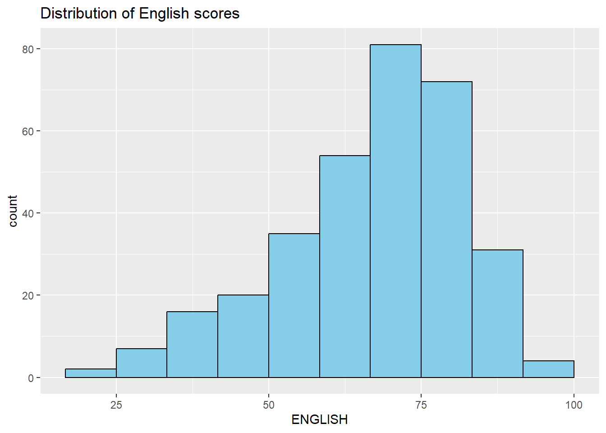
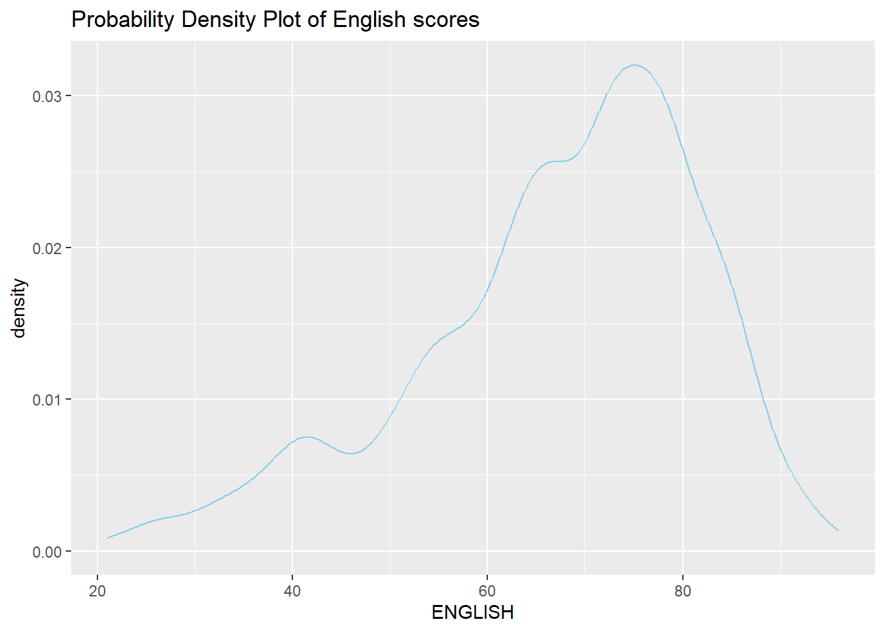
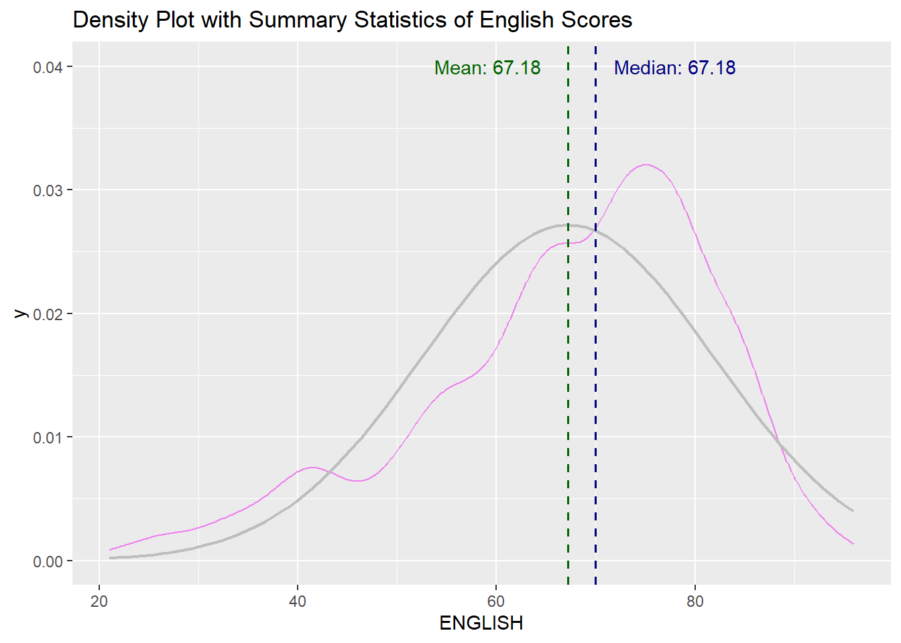
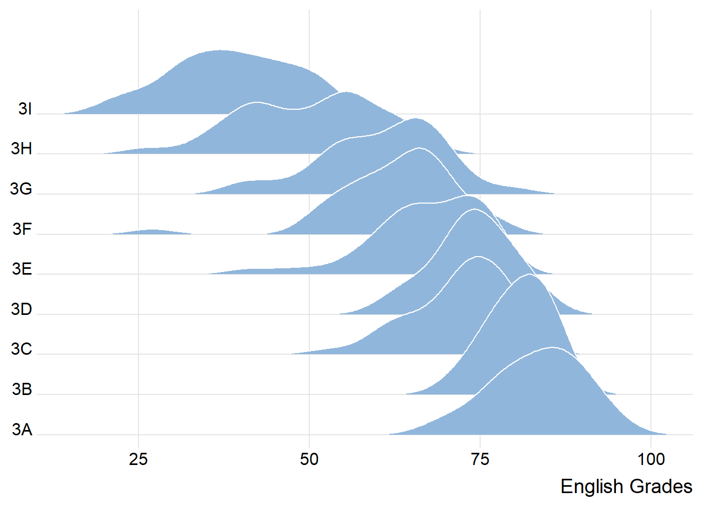
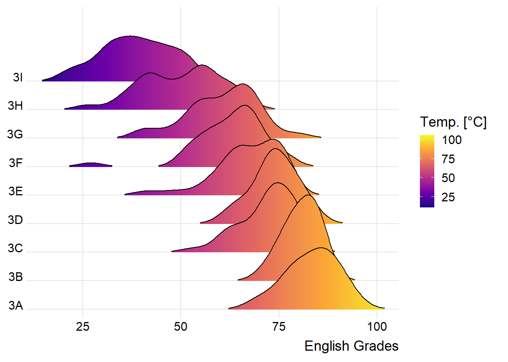
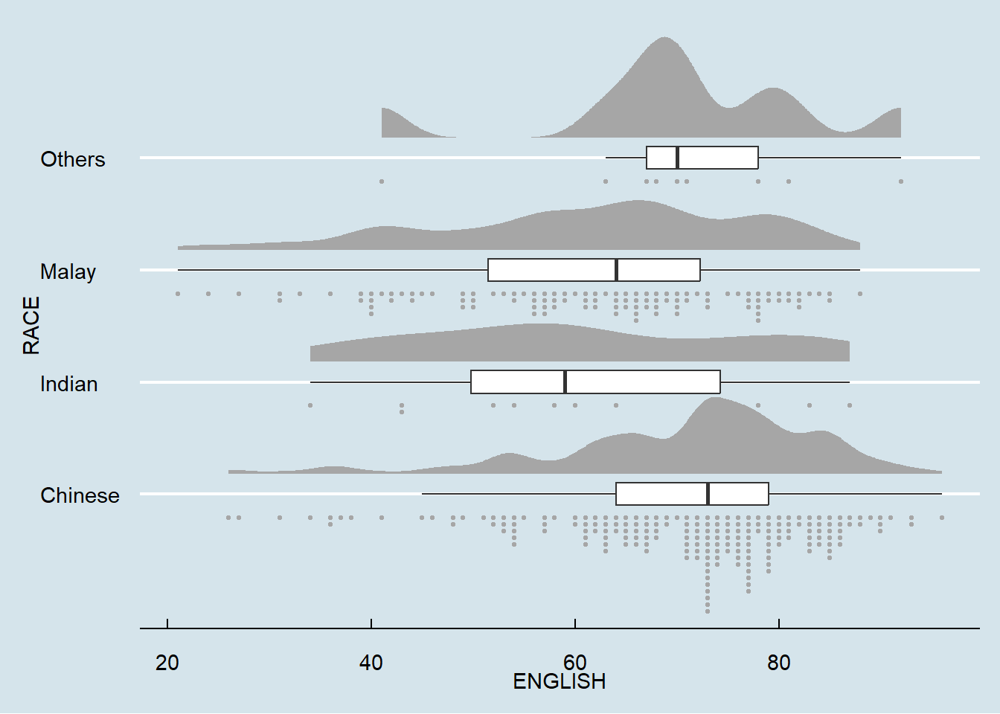

pacman::p_load(ggdist, ggridges, ggthemes, colorspace, tidyverse)In-Class Exercise 2 - Visualising Distribution
Learning Objectives:
Statistical graphic methods for visualising distribution using ggplot2 and its extensions for:
Ridgeline plot
Raincloud plot
Getting Started
Loading R packages
Note: Ensure that the pacman package has already been installed.
The code chunk below uses p_load() of pacman package to load the tidyverse family of packages.
ggridges, a ggplot2 extension specially designed for plotting ridgeline plots,
ggdist, a ggplot2 extension spacially desgin for visualising distribution and uncertainty,
tidyverse, a family of R packages to meet the modern data science and visual communication needs,
ggthemes, a ggplot extension that provides the user additional themes, scales, and geoms for the ggplots package, and
colorspace, an R package provides a broad toolbox for selecting individual colors or color palettes, manipulating these colors, and employing them in various kinds of visualisations.
Importing the Data
The code chunk below imports Exam_data.csv into R environment by using read_csv() function of readr package.
readr is one of the tidyverse package.
exam_df <- read_csv("data/Exam_data.csv")exam_data contains:
Year end examination grades of a cohort of primary 3 students from a local school.
There are a total of seven attributes. Four of them are categorical data type and the other three are in continuous data type.
The categorical attributes are: ID, CLASS, GENDER and RACE.
The continuous attributes are: MATHS, ENGLISH and SCIENCE.
ggplot
ggplot2 is an R package for declaratively creating data-driven graphics based on The Grammar of Graphics. It is also part of the tidyverse family specially designed for visual exploration and communication.

ggplot(data=exam_df, aes(x = ENGLISH)) +
geom_histogram(bins=10,
boundary = 100,
color="black",
fill="skyblue") +
ggtitle("Distribution of English scores")Probability Density Plot
More appropriate method to represent continuous values

ggplot(data=exam_df, aes(x = ENGLISH)) +
geom_density(color="skyblue",
adjust = .65,
alpha = .1) +
ggtitle("Probability Density Plot of English scores")Density Plot with Summary Statistics
The code chunk below includes a probability density plot (violet) and normal distribution plot (gray). The mean (green) and median (blue) of the data is also plotted.

median_eng <- median(exam_df$ENGLISH)
mean_eng <- mean(exam_df$ENGLISH)
std_eng <- sd(exam_df$ENGLISH)
# Probability Density Plot
ggplot(data=exam_df, aes(x = ENGLISH)) +
geom_density(color="violet",
adjust = .65,
alpha = .1) +
stat_function( # Normal Distribution Plot
fun = dnorm,
args = list(mean = mean_eng, sd = std_eng),
col = "gray",
linewidth = .8) +
geom_vline( # Mean line
aes(xintercept = mean_eng),
colour = "darkgreen",
linewidth = .6,
linetype = "dashed") +
annotate(geom = "text",
x = mean_eng -8,
y = .04,
label = paste0("Mean: ",
round((mean_eng),2)),
colour="darkgreen") +
geom_vline( # Median Line
aes(xintercept = median_eng),
colour = "navy",
linewidth = .6,
linetype = "dashed") +
annotate(geom = "text",
x = median_eng +8,
y = .04,
label = paste0("Median: ",
round((mean_eng),2)),
colour="navy") +
ggtitle("Density Plot with Summary Statistics of English Scores")Ridgeline Plot
Ridgeline plot (i.e. Joyplot) reveals the distribution of a numeric value for several groups. Distribution can be represented using histograms or density plots, all aligned to the same horizontal scale and presented with a slight overlap.
ggridges package provides two main geom to plot gridgeline plots:
-
- takes height values directly to draw the ridgelines
-
- first estimates data densities and then draws those using ridgelines
Code chunk below shows a ridgelines plot of distribution of English score by class using geom_density_ridges()

ggplot(exam_df,
aes(x = ENGLISH,
y = CLASS)) +
geom_density_ridges(
scale = 3,
rel_min_height = 0.01,
bandwidth = 3.4,
fill = lighten("#7097BB", .3),
color = "white"
) +
scale_x_continuous(
name = "English Grades",
expand = c(0, 0)
) +
scale_y_discrete(name = NULL, expand = expansion(add = c(0.2, 2.6))) +
theme_ridges()
Note
Used when:
Number of groups to represent is medium to high (e.g. >5), thus
Classic window separation take up too much space
Overlap in the groups allows more efficient use of space
There is a clear pattern in the result, e.g., obvious ranking in groups
Varying Fill Colours along the X-axis
Sometimes we would like to have the area under a ridgeline not filled with a single solid color but rather with colors that vary in some form along the x axis.
To achieve varying fill colours:
However, they do not allow for alpha transparency.

ggplot(exam_df,
aes(x = ENGLISH,
y = CLASS,
fill = stat(x))) +
geom_density_ridges_gradient(
scale = 3,
rel_min_height = 0.01) +
scale_fill_viridis_c(name = "Temp. [°C]",
option = "C") +
scale_x_continuous(
name = "English Grades",
expand = c(0, 0)
) +
scale_y_discrete(name = NULL, expand = expansion(add = c(0.2, 2.6))) +
theme_ridges()Mapping Probabilities directly onto colour
Stat function called stat_density_ridges() replaces stat_density() of ggplot2.
Figure below is plotted by mapping the probabilities calculated by using stat(ecdf) which represent the empirical cumulative density function for the distribution of English score.

ggplot(exam_df,
aes(x = ENGLISH,
y = CLASS,
fill = 0.5 - abs(0.5-stat(ecdf)))) +
stat_density_ridges(geom = "density_ridges_gradient",
calc_ecdf = TRUE) +
scale_fill_viridis_c(name = "Tail probability",
direction = -1) +
theme_ridges()
Important
Include the argument calc_ecdf = TRUE in stat_density_ridges()!
Ridgeline Plots with Quantile Lines
Ridgeline plots can be coloured by quantile using geom_density_ridges_gradient(), via the calculated stat(quantile)

ggplot(exam_df,
aes(x = ENGLISH,
y = CLASS,
fill = factor(stat(quantile))
)) +
stat_density_ridges(
geom = "density_ridges_gradient",
calc_ecdf = TRUE,
quantiles = 4,
quantile_lines = TRUE) +
scale_fill_viridis_d(name = "Quartiles") +
theme_ridges()Quantiles can also be specified by cut points e.g. 2.5% and 97.5% tails to colour the ridgeline plot.

ggplot(exam_df,
aes(x = ENGLISH,
y = CLASS,
fill = factor(stat(quantile))
)) +
stat_density_ridges(
geom = "density_ridges_gradient",
calc_ecdf = TRUE,
quantiles = c(0.025, 0.975)
) +
scale_fill_manual(
name = "Probability",
values = c("#FF0000A0", "#A0A0A0A0", "#0000FFA0"),
labels = c("(0, 0.025]", "(0.025, 0.975]", "(0.975, 1]")
) +
theme_ridges()Raincloud Plot
A data visualisation technique that produces a half-density to a distribution plot. It got its name due to the likeness of the density plot to a shape of a “raincloud”. The raincloud (half-density) plot enhances the traditional box-plot by highlighting multiple modalities (an indicator that groups may exist). The raincloud plot shows where densities are clustered.
It is created by using functions provided by ggdist and ggplot2 packages.
Plotting a Half Eye graph
Plot a Half-Eye graph by using stat_halfeye() of ggdist package, producing a Half Eye visualization, which is contains a half-density and a slab-interval.


Note
Remove the slab interval by setting .width = 0 and point_colour = NA.
Adding the boxplot
The second geometry layer i.e. a narrow boxplot is produced using geom_boxplot() of ggplot2 This produces a narrow boxplot.

ggplot(exam_df,
aes(x = RACE,
y = ENGLISH)) +
stat_halfeye(adjust = 0.5,
justification = -0.2,
.width = 0,
point_colour = NA) +
geom_boxplot(width = .20,
outlier.shape = NA)Adding the Dot Plots
The third geometry layer is added using stat_dots() of ggdist package. This produces a half-dotplot, similar to a histogram that indicates the number of samples (number of dots) in each bin. Use side = “left” to specify the dot plots on the left-hand side.

ggplot(exam_df,
aes(x = RACE,
y = ENGLISH)) +
stat_halfeye(adjust = 0.5,
justification = -0.2,
.width = 0,
point_colour = NA) +
geom_boxplot(width = .20,
outlier.shape = NA) +
stat_dots(side = "left",
justification = 1.2,
binwidth = .5,
dotsize = 2)Finishing touch
coord_flip() of ggplot2 package is used to flip the raincloud chart horizontally to give it the raincloud appearance. theme_economist() of ggthemes package is also used to give the raincloud chart a professional publishing standard look.

ggplot(exam_df,
aes(x = RACE,
y = ENGLISH)) +
stat_halfeye(adjust = 0.5,
justification = -0.2,
.width = 0,
point_colour = NA) +
geom_boxplot(width = .20,
outlier.shape = NA) +
stat_dots(side = "left",
justification = 1.2,
binwidth = .5,
dotsize = 1.5) +
coord_flip() +
theme_economist()